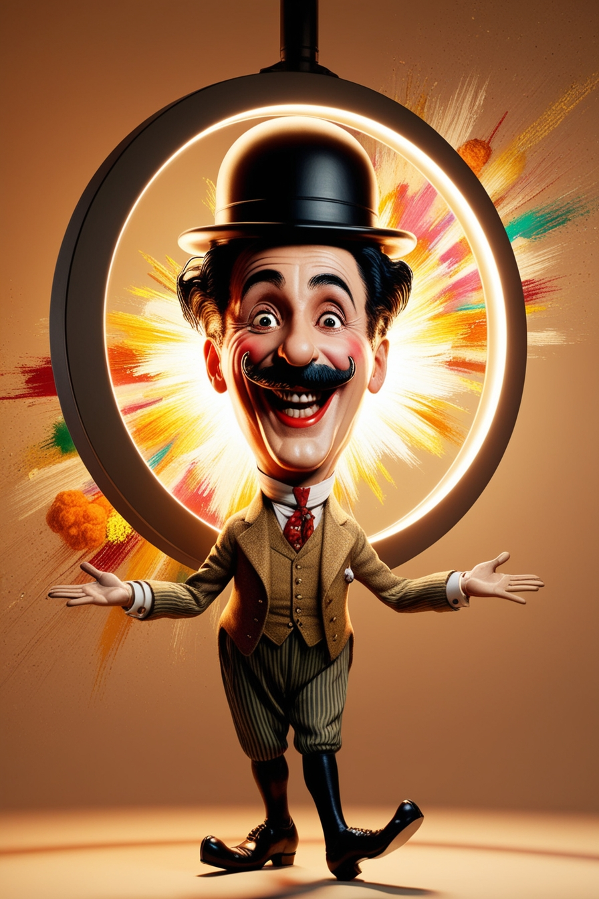
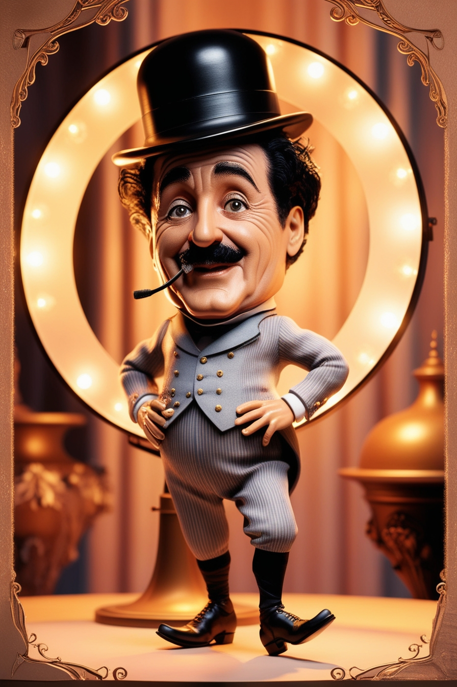
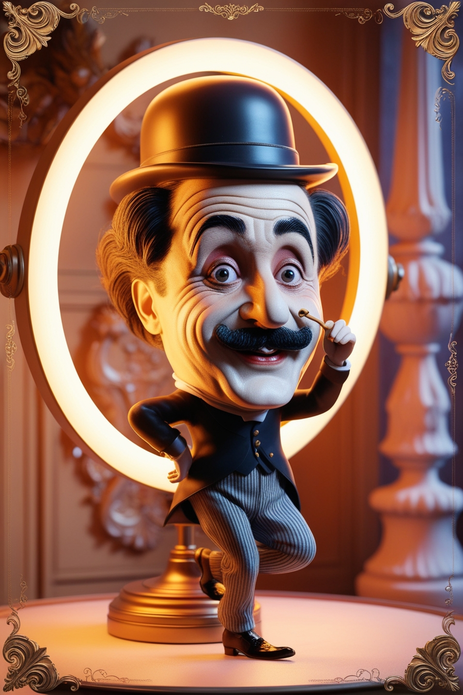
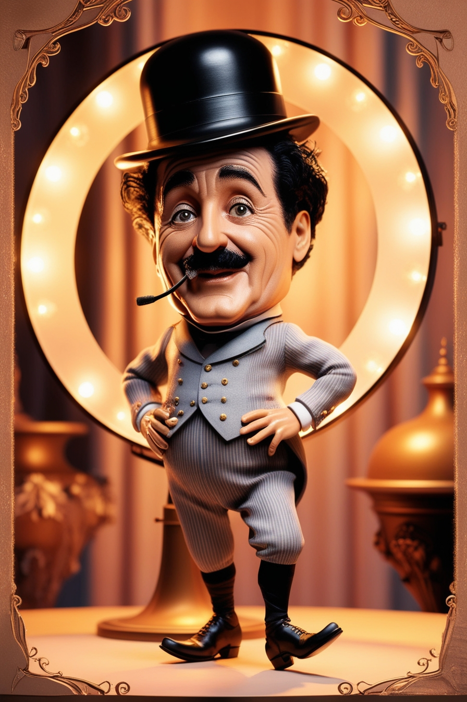
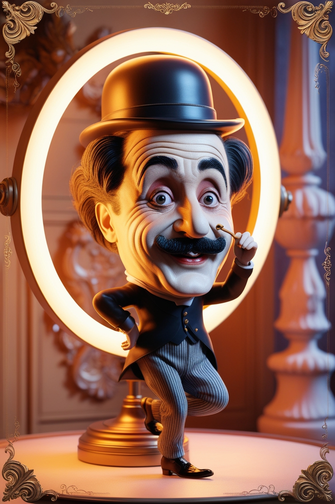

"El caballo en movimiento",
Eadweard Muybridge (1878)
Bienvenidos
¡¡¡Bienvenidos a nuestra página del Cine como Patrimonio!!!
Historia del Cine
El CINE es una forma de arte y entretenimiento que utiliza la proyección de imágenes en movimiento para contar historias, transmitir ideas y emociones.
La historia del cine es fascinante y abarca más de un siglo de innovaciones tecnológicas, artísticas y culturales.
Definición: El cine, también conocido como cinematografía, es la técnica y el arte de crear y proyectar películas. Se basa en la captura y reproducción de imágenes en movimiento, lo que genera la ilusión de movimiento continuo
- Elementos del Cine
- Técnica: Incluye la grabación de fotogramas a una velocidad que el ojo humano percibe como movimiento continuo. Las películas suelen grabarse a 24 fotogramas por segundo2.
- Narrativa: El cine es una forma de narrar historias visualmente, combinando elementos como el guion, la dirección, la actuación, la fotografía y el montaje2.
Del cine mudo al sonoro
Aquí va tu contenido sobre la evolución del cine...
Aspectos técnicos
El significado del patrimonio audiovisual: es una afirmación de nuestra memoria colectiva y una valiosa fuente de conocimiento, ya que reflejan la diversidad cultural, social y lingüística de nuestras comunidades.
Galería de Imágenes
 



Noticias
Wim Wenders recibe el premio FIAF 2024 en el Maratón de Cine Clásico de Budapest
La FIAF entregó su Premio FIAF 2024 al aclamado cineasta alemán Wim Wenders durante una ceremonia especial en Budapest, Hungría, como parte de la 7ª edición del Maratón de Cine Clásico de Budapest. Leer más
Día Mundial del Patrimonio Audiovisual 2024
Cada 27 de octubre, los archivos audiovisuales de todo el mundo conmemoran el Día Mundial del Patrimonio Audiovisual para celebrar la labor de los archivos y, concienciar sobre la importancia... Leer más
Patrimonio Cultural
El cine es una forma de transmisión de la cultura universal de todos los tiempos. Nuestra sociedad se va formando e informando a través del cine y las películas, reportajes o documentales, que permiten otro tipo de acercamiento.
-
Internet Archive es el sitio ideal para disfrutar de 5000 películas de dominio público de forma totalmente gratuita (y legal, no lo olvides).
-
Cine Clásico: las joyas del cine en blanco y negro y los grandes clásicos del Séptimo Arte, se pueden encontrar una buena parte de estas películas.